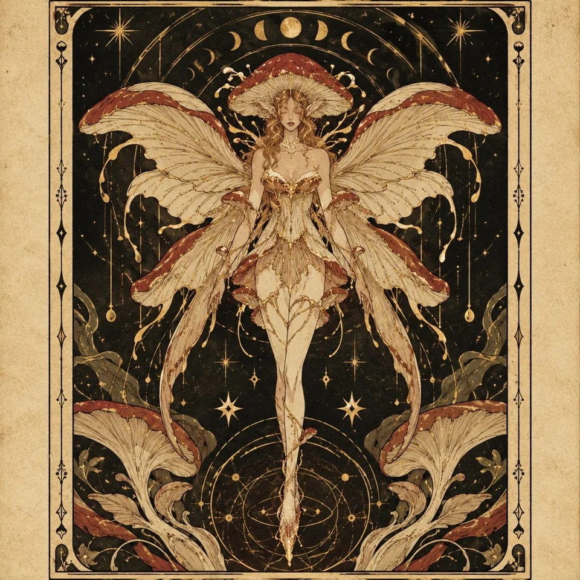

00 / PUBLIC SNAPSHOT
Measured from source.
Repository activity, publication surface, and engineering output. Repository inventory refreshed 2026-10-26; historical engineering metrics retain their earlier observation date. PRs, merges, and reviews include owned repositories and attributed external contributions; commit totals sum default branches and may overlap across forks and mirrors.
Repository counts identify repository records. Distinct codebases counts records classified as kind=original. Commit totals are authored default-branch commits and may overlap across forks and mirrors.
01 / SELECTED WORK
Strongest work first.
Ordered by technical depth, evidence surface, and current relevance.
Source, method, and limitations included.
9 projects
FEATURED / ASSURANCE ENGINERCHAIN-COMPLIER
When a claim needs evidence.
Make execution claims independently checkable with signed evidence, durable recovery, and deterministic verification.
- TypeScript
- Node.js
- Ed25519
- SQLite WAL
10/14 evidence surface446 authored commits20 merged PRs
ASSURANCE ENGINE / LOCAL TOPOLOGY3 PROCESSES
Verification policy stays under the reviewer’s control.
Inside the engineering PROBLEM / APPROACH / DECISIONS
THE PROBLEM
A result alone cannot explain which task ran, who produced it, or whether an independent verifier can reproduce the claim after a restart.
THE APPROACH
Three local processes persist separate identities and journals. Signed tasks, evidence, and two verifier receipts form a canonical package that can be checked and replayed.
THE DECISIONS
Keep reviewer pins independent of the producer. Bind evidence to a specific operation. Preserve durable state across recovery. Reject tampering with executable checks.
CURRENT SCOPE
Fixed membership, trusted verifier code, and local transport. A passing task-bound check is not a protocol safety theorem or a production RChain finality claim.
QuantumOS
Capability-based collaboration, from the browser to Rust/WASM.
A peer-to-peer development workspace for shared rooms, capability transport and a Rust/WASM kernel. Research and development scope.
- TypeScript / Rust / WebRTC
CHIMERA Desk
A working desk for questions across disciplines.
A browser research surface for quantum simulations, proof experiments, consensus visualization and technical notes.
- TypeScript / Browser
CHIMERA Red Team
An inspectable public surface for adversarial work.
Public documentation and a local command builder. Analysis and evidence execution remain in the separate private engine.
- JavaScript / Security
CHIMERA-ONE
Coordinated execution, pinned capabilities, and evidence-bound verification.
- Rust
- Verification
Inspectable public sourceBounded claims
Scope & evidence
Version-pinned components and bounded workflows; no blanket correctness claim.
RitualGraph
Executable threat graphs, deterministic simulation, and CI-checkable security invariants.
- Python
- Verification
Inspectable public sourceBounded claims
Scope & evidence
Simulation findings remain model-scoped; not proof of production exposure.
Aether Forge
Interactive quantum-gravity research laboratory with explicit approximation and synthetic-data boundaries.
- TypeScript
- Verification
Inspectable public sourceBounded claims
Scope & evidence
Illustrative and approximate models, not a full quantum-gravity solver.
Sovereign Lattice
Explore PBFT-style consensus with cryptographic certificates, durable state, and scoped formal artifacts.
- Rust
- BLS12-381
- Lean 4
- WAL
12/14 evidence surface470 authored commits
Scope & evidence
Quorum and view-change logic are studied alongside persistence and selected formal invariants. Research artifacts are not presented as a production consensus guarantee.
- formal artifacts must be scoped precisely
- README-level mathematical claims are not promoted to registry facts without artifact-level verification
Aether Runtime
Keep a verifiable record of bounded execution across routing failures, restarts, and replay.
- Rust
- C++
- gRPC
- SQLite WAL
9/14 evidence surface53 authored commits11 merged PRs
Scope & evidence
A Rust control plane and C++ route share an operation contract. Persisted Ed25519 identities sign execution receipts. Current admitted operations are echo, ASCII uppercase, and sha256.
- no blanket remote-attestation claim
- no distributed-consensus claim
- no arbitrary-shell safety claim
Omni
Test how robust an investigation is when its evidence is challenged, removed, or replayed.
- TypeScript
- React
- Python
- Ed25519
7/14 evidence surface6 authored commits6 merged PRs
Scope & evidence
Public-source collection, competing hypotheses, evidence stress tests, and portable run receipts. Integrity verifies binding and consistency; it does not establish the truth of a source.
- integrity mechanisms demonstrate binding/consistency, not truth
- quantum-adjacent artifacts do not imply quantum advantage
Nexus Quantum
Research workspace for quantum error mitigation experiments (VQE, zero-noise extrapolation) with Lean 4 proof artifacts.
- Lean 4
- Python
- Qiskit
- FastAPI
7/14 evidence surface31 authored commits1 merged PRs
Scope & evidence
VQE, zero-noise extrapolation, and spectral/geometric proof experiments. The existence of Lean files is not a certification of the complete system.
- presence of Lean artifacts does not certify the full system
- formal scope must be audited theorem-by-theorem before a formally-verified badge is used
VQE Analyzer
Browser workbench for small-circuit variational quantum optimization: real statevector evaluation, exact-reference comparison and retained best parameters. Simulator only.
- JavaScript
- Python
- Statevectors
6/14 evidence surface19 authored commits16 merged PRs
Scope & evidence
RY/CX circuits, exact-reference comparisons, fresh random starts, and persistent search memory. A simulator for small circuits; hardware execution and quantum advantage are not claimed.
- no quantum-advantage claim
- no hardware-execution claim
- no global-convergence guarantee
- not presented as QAOA
RChain Sentinel
Independent observation and evidence layer for RChain node/block behavior.
- C
- DTrace
- Docker
- Dockerfile
7/14 evidence surface141 authored commits
Scope & evidence
Independent observation and evidence layer for RChain node/block behavior.
- does not claim independent stake-weighted Casper finality
- observations are separated from protocol-level proof
Strategic Intelligence Lattice
Compare adaptive computation policies under equal budgets in a reproducible synthetic decision laboratory.
- Python
- Streamlit
- Docker
8/14 evidence surface160 authored commits2 merged PRs
Scope & evidence
Uniform allocation remains the baseline after exploratory adaptive methods failed to establish a general advantage. Negative and neutral results are retained.
- failed or neutral experiments remain recorded
- experimental wins are not generalized beyond their measured conditions
Rholox
Evidence-first public-testnet product surface for RChain interaction and verification.
- CSS
- GitHub Actions
- HTML
- JavaScript
5/14 evidence surface37 authored commits12 merged PRs
Scope & evidence
Evidence-first public-testnet product surface for RChain interaction and verification.
- public-testnet scope
- no mainnet status claim
- no production custody claim
- telemetry must come from real node data
rlsenti
Deterministic RChain reality/sentinel workbench for provenance, bounded language experiments, certificates, and synthetic node observations.
- CSS
- GitHub Actions
- HTML
- JavaScript
8/14 evidence surface64 authored commits
Scope & evidence
Deterministic RChain reality/sentinel workbench for provenance, bounded language experiments, certificates, and synthetic node observations.
- current workbench data is self-contained/synthetic unless explicitly connected to live evidence
- not represented as an independent live Casper-finality verifier
Book of Kings
Local-first Persian cultural reflection product built around a structured daily ritual and Shahnameh-inspired visual language.
- CSS
- JavaScript
- Next.js
- Node.js
5/14 evidence surface12 authored commits11 merged PRs
Scope & evidence
Local-first Persian cultural reflection product built around a structured daily ritual and Shahnameh-inspired visual language.
- consumer/cultural product rather than an engineering-verification claim
Aether Runtime OS
Multi-process Aether runtime research generation focused on recovery, signed evidence, WAL-backed persistence, and deterministic replay.
- GitHub Actions
- Rust
- Rust/Cargo
5/14 evidence surface5 authored commits
Scope & evidence
Multi-process Aether runtime research generation focused on recovery, signed evidence, WAL-backed persistence, and deterministic replay.
- repository chronology does not establish that this codebase predates aether-runtime
- runtime/replay evidence is not a formal correctness proof
LLM Security PoC
Forensic red-team proof-of-concept repository for testing security failure modes in dynamic model/application architectures.
- Python
3/14 evidence surface4 authored commits
Scope & evidence
Forensic red-team proof-of-concept repository for testing security failure modes in dynamic model/application architectures.
- PoC labels are not treated as established vulnerabilities in third-party targets without target-specific reproduction and evidence
- severity language remains scoped to demonstrated conditions
No projects in this category yet.
Explore the other domains or return to the full selection.
Curated from repository documentation. Status describes scope, not a production guarantee.
02 / RESEARCH & EXPERIMENTS
Questions worth testing.
Small, explicit questions. Reproducible methods.
Room for a result that says “not yet.”
01 / ADAPTIVE COMPUTATION
When does more reasoning help?
Ongoing research- Question
- Can adaptive allocation improve decisions at the same compute budget?
- Method
- Synthetic query experiments with fixed-budget comparisons and held-out evaluation.
- Status
- Uniform remains the baseline; neutral and negative results are preserved.
02 / QUANTUM + FORMAL METHODS
Where does the proof end?
Experimental- Question
- Which mathematical constraints can be expressed separately from a quantum heuristic?
- Method
- Lean 4 spectral and geometric artifacts alongside VQE and ZNE experiments.
- Status
- Formal artifacts exist. Their scope must be assessed theorem by theorem.
03 / VARIATIONAL OPTIMIZATION
What does the search retain?
Interactive experiment- Question
- How do fresh starts and retained parameters change a small-circuit optimization search?
- Method
- Statevector energy evaluation, adaptive mutations, and exact-reference comparisons.
- Status
- The workbench retains the best evaluated parameters; convergence is not guaranteed.
03 / TECHNICAL PRACTICE
Across the stack.
Close to the fundamentals.
The tools change with the problem.
The discipline stays the same.
AI & intelligent systems
Model workflows, local inference, and decision experiments that make behavior inspectable.
- Local language models
- Agent workflows & model routing
- Retrieval & automation
- Python
Backend & distributed systems
Services that preserve state and explain what happened when something fails.
- Rust & FastAPI
- WebSockets & Redis Streams
- Event-driven architecture
- Fault tolerance & deterministic replay
Quantum & formal methods
Experiments where numerical results and the scope of a proof remain distinct.
- Qiskit & quantum simulation
- Variational optimization
- Lean 4 & theorem proving
- Mathematical modeling
Infrastructure & security
Explicit trust boundaries, reproducible environments, and adversarial testing.
- Linux & Android environments
- CI/CD & GitHub automation
- Zero Trust concepts
- Policy-as-code
04 / FROM THE SOURCE
Still building.
A small view of recent repository activity.
Repository snapshot · 2026-10-26
Shahnameh-lite ↗TypeScript
aetherforge ↗TypeScript
05 / REPOSITORY ATLAS
Every repository has a place.
Repository visibility was checked against GitHub on 2026-10-26; historical evidence metrics retain their earlier snapshot. Private work is indexed separately without exposing private source. Live surfaces are linked directly.
01 / RCHAINRChain Assurance6-repository family↗02 / CHIMERACHIMERA-ONE ConstellationCHIMERA-ONE + 6 connected repos↗03 / QUANTUMQuantum + Formal Systems10 research nodes↗
Archived repositories · Archive (20) ↗
PUBLIC SPOTLIGHT / 19
Current public atlas
evidence runtime constellationactive
CHIMERA-ONE
Coordinated execution, pinned capabilities, and evidence-bound verification.
Rust
evidence runtime constellationactive
Chimera-AG
Self-hosted orchestration with measured routing and reproducible verification.
Python
evidence runtime constellationresearch
RitualGraph
Executable threat graphs, deterministic simulation, and CI-checkable security invariants.
Python
quantum / formal researchactive research
Aether Forge
Interactive quantum-gravity research laboratory with explicit approximation and synthetic-data boundaries.
TypeScript
security / runtime systemsresearch
Personal LLM Sanctum
Local-first Rust runtime with recorded runs, routing, memory and replay.
Rust
cultural softwarelegacy
Shahnameh Lite
Persian-first storytelling and reading guide with offline search and browser narration.
TypeScript
rchain assuranceactive
RCHAIN-COMPLIER
Make execution claims independently checkable with signed evidence, durable recovery, and deterministic verification.
TypeScriptPythonJavaScriptHTML
446 commits · 38 PRs · 53 CI
quantum formalresearch
Sovereign Lattice
Explore PBFT-style consensus with cryptographic certificates, durable state, and scoped formal artifacts.
MakefileRustHTMLLean
470 commits · 4 PRs · 5 CI
chimera evidence runtimeactive
Aether Runtime
Keep a verifiable record of bounded execution across routing failures, restarts, and replay.
RustPythonHTMLC++
53 commits · 12 PRs · 4 CI
intelligence securityactive
Omni
Test how robust an investigation is when its evidence is challenged, removed, or replayed.
JavaScriptTypeScriptPythonCSS
6 commits · 6 PRs · 1 CI
quantum formalresearch
Nexus Quantum
Research workspace for quantum error mitigation experiments (VQE, zero-noise extrapolation) with Lean 4 proof artifacts.
PythonTypeScriptHTMLCSS
31 commits · 3 PRs · 4 CI
quantum formalactive
VQE Analyzer
Browser workbench for small-circuit variational quantum optimization: real statevector evaluation, exact-reference comparison and retained best parameters. Simulator only.
JavaScriptCSSHTMLPython
19 commits · 17 PRs · 8 CI
rchain assuranceactive
RChain Sentinel
RChain transaction, contract, and network verification console
MakefileRustHTMLDTrace
141 commits · 7 PRs · 4 CI
research operationsresearch
Strategic Intelligence Lattice
Compare adaptive computation policies under equal budgets in a reproducible synthetic decision laboratory.
PythonTeXDockerfile
160 commits · 2 PRs · 8 CI
rchain assuranceactive
Rholox
Rholox — RChain-native DApp platform and testnet gateway
TypeScriptCSSJavaScriptHTML
37 commits · 12 PRs · 2 CI
rchain assuranceresearch
rlsenti
Compiler/workbench evidence adapter; synthetic/integration-oriented.
TypeScriptJavaScriptHTMLCSS
64 commits · 3 PRs · 1 CI
cultural consumeractive
Book of Kings
The shahnameh
TypeScriptCSSJavaScript
12 commits · 11 PRs · 4 CI
intelligence securityresearch
LLM Security PoC
Security hypotheses/PoCs; external or target-specific validation required before stronger vulnerability claims.
Python
4 commits
rchain assuranceactive
rchain-rust fork
Blockchain (smart contract) platform using CBC-Casper proof of stake + Rholang for concurrent execution.
RustLeanShellPython
1 PRs · 6 CI
THE FULL PICTURE / 53 PUBLIC REPOSITORIES
Follow a thread.
Search the public work by project, language or topic.
53 repositories
aixaria0.github.io
SourceAIX — Engineering Intelligence Registry
chimera-redteam-web
SourcePublic web console and documentation for CHIMERA Red Team
Shahnameh-lite
SourceShahnameh-lite
aetherforge
SourceInteractive loop quantum gravity research lab with explicit formula, approximation, and synthetic-data boundaries.
PERSONAL-LLM-SANCTUM
SourceLocal-first adaptive multi-LLM orchestration runtime for Galaxy Tab S9+ and remote compute
CHIMERA-ONE
SourceControl plane composing versioned CHIMERA capabilities while preserving component trust and evidence boundaries.
rchain-rust
SourceBlockchain (smart contract) platform using CBC-Casper proof of stake + Rholang for concurrent execution.
quantum-os-workspace
SourceQuantumOS development workspace for browser peer-to-peer collaboration, capability transport, and Rust/WASM components.
Rholox
SourceRholox — RChain-native DApp platform and testnet gateway
rchain-sentinel
SourceEvidence-first RChain block forensics: payload fingerprinting, canonical consistency, cross-node corroboration, Casper-shaped evidence inventory, and explicit claim boundaries.
Omni
SourceProof-carrying public-infrastructure investigation, evidence robustness, and quantum/classical attestation by AixAria.
Quantum001
SourceInteractive quantum research studio with a twelve-qubit circuit composer and inspectable experiment records.
CHIMERA-DESK
SourceBrowser research control surface for quantum simulation, consensus, proofs, markets and technical research.
rlsenti
SourceEvidence compiler and provenance workbench: deterministic protocol artifacts, linked witness envelopes, adversarial mutations, replay, first divergence, and explicit claim boundaries.
jimscarversQLF
SourceEducational consensus workbench for protocol simulations, formal specifications, invariants, and execution traces.
RCHAIN-COMPLIER
SourceProtocol-agnostic assurance engine for task-bound evidence, deterministic replay, provenance, durable recovery, and adversarial RChain research.
aether-runtime
SourceRust/C++ hybrid execution kernel
Aix
Sourceprivate
fracture-archive
SourceFracture Archive — local-first research desk for post-quantum cryptography, holography, Hawking radiation, and primordial cosmology.
CHIMERA-OMEGA-public
SourceCHIMERA OMEGA — bounded proof-carrying evidence verifier (AGPL-3.0-or-later)
Sovereign-Lattice
SourceByzantine-fault-tolerant consensus engine in Rust with BLS12-381, strict NewView, WAL recovery, adversarial testing, and selected Lean 4 safety invariants.
Bookofkings
SourceThe shahnameh
vqe-analyzer
SourceThis tool renders complex algorithmic performance landscapes in real-time using zero-dependency Vanilla JavaScript. While built for Quantum VQE, the underlying engine is production-ready for financial and industrial applications.
Chimera-AG
SourceSelf-hosted coordination runtime with specialist routing, council workflows, and measured verification.
Aether-Runtime-OS
SourceA fault-tolerant, evidence-carrying runtime for autonomous and distributed AI execution.
Reproducible research simulation for adaptive computation allocation and bounded decision experiments.
RitualGraph
SourceCompiler and simulation engine for executable AI threat models, security invariants, attack graphs, control verification, and evidence-driven CI gates.
chimera-command-lab
SourceExperimental CHIMERA command-lattice workspace for classical and quantum research.
Aria-Lab
SourceExperimental research workspace for protein-design studies and interactive analysis.
QLF
SourceResearch workspace for protocol models, logic specifications, and interactive formal-methods exploration.
webapp-scaffold-lab
SourceExperimental TypeScript web workspace with client, server, and migration components.
nexus-quantum
SourceI-Powered Quantum Error Mitigation Platform
lattice-workbench
SourceLattice research prototype combining interactive quantum and formal-methods exploration.
My-little-baddies-
SourceExperimental browser dashboard for consensus visualization and research telemetry.
chimera-engine-prototype
SourceHistorical CHIMERA engine prototype with an interactive TypeScript research interface.
Shahnamehresonance-
SourceMake communication with ferdowsi and the whole book itself from thousands years ago
llm-security-poc
SourceExperimental security research on adaptive operator drift, with Python examples and regression tests.
empire-pwa
SourceEmpire Chat PWA — WebLLM in-browser AI, installable, offline-capable
OSint
SourceOmniTrace prototype: a public-data investigation dashboard with a FastAPI backend and Next.js frontend.
apex-quant-prototype
SourceApex Quant: an experimental quantitative research prototype with Python and browser components.
faal-web
SourceFaal Web: a standalone browser prototype for interactive reflection.
faal-scaffold
SourceFaal
ensemble-chat-prototype
SourceJust for fun
live-veil
SourceLive Veil: a shared-intention web prototype with live updates, echoes, and interactive visuals.
scratch-notes
SourceGg
aria-trading-legacy
SourceTrade
omnitrace-variant
SourceOmniTrace variant with a public-data investigation frontend, backend services, and observability configuration.
AriaTrading0
SourceLegacy AriaTrading implementation retained as a separate development snapshot.
AriaTrading.github.io
SourceSite
Thebookofkings
SourceThe book of kings matrix
Theshahnameh
SourceThe book of kings matrix
forgeos
SourceReserved project scaffold; the default branch currently contains a license only.
training-configurations
SourceExperimental TypeScript workspace containing local application configurations and training recipes.
No matching repositories. Try another name or topic.
PRIVATE / 17
Private repository index
Names, families, and status only. Private source stays private; approved public artifacts remain linkable.
registry metaactive
Aix Registry
A structured registry for projects and the published portfolio source of truth.
registry metalegacy
Aixaria Registry (superseded)
An earlier registry of projects, contributions, evidence, and their relationships.
quantitative systemsactive
AriaTrading
A quantitative intelligence core.
evidence runtime constellationresearch
CHIMERA RChain Staking Audit
A domain-specific evidence-first audit pack for RChain staking.
evidence runtime constellationactive
CHIMERA-OMEGA
An evidence kernel for claims accompanied by inspectable data.
pending classificationpending
chimera-redteam
Private project; source remains restricted.
pending classificationpending
cobordism
Private project; source remains restricted.
legacy scratchlegacy
Demo Repository
A demonstration repository presenting selected GitHub platform features.
legacy scratchlegacy
Empire Aix
A legacy experiment whose classification may be refined with further review.
pending classificationpending
Fracturebench
Private project; source remains restricted.
pending classificationpending
lattice-register
Private project; source remains restricted.
rchain assuranceresearch
RChain Reality Compiler
An in-browser compiler and workbench that does not provide live RChain network evidence.
legacy scratchpending
smm
A stateful, model-agnostic runtime combining local memory, independent views, verification, and a hash-chained execution ledger.
quantum / formal researchresearch
Sovereign Quantum Stack
A quantum security and deserialization proof of concept.
pending classificationpending
veritas-prototype
Private project; source remains restricted.
quantum / formal researchlegacy
VQE
A historical prototype related to quantum computing.
pending classificationpending
webapp-scaffold
Private project; source remains restricted.
TWO WORLDS / ONE FOUNDATION
The builder &
the living world.
Cosmic geometry, living networks, and a shared curiosity. Three illustrations woven into the story of Sunaria.
Meet the people ↓


06 / THE PEOPLE BEHIND THE SYSTEMS
Aria + Sanaz.
Engineering & vision · grounding & continuity
Portraits & shared moments


The technical work is Aria’s. The foundation is shared.
Aria imagines systems before they exist, then architects, implements, tests, and documents them across AI, distributed systems, quantum computing, formal methods, and security.
Sanaz is here because the work did not happen in a vacuum. For a decade she has been the grounding force beneath it—the continuity, pressure, reality-check, and foundation that made long arcs of difficult work possible.
Alongside that role, Sanaz is pursuing a fully funded PhD in Mycology (fungal sciences). Her work brings a second scientific axis to Sunaria: living systems beside engineered systems.
Sunaria is the bond between those roles: imagination and grounding, architecture and continuity, possibility and reality.
Some projects are usable tools. Others are experiments with unresolved questions. Both belong here, with enough source, evidence, and context to tell them apart.
LET’S COMPARE NOTES
A difficult technical problem?
An interesting system to build?
Open to thoughtful technical conversations, research collaboration, and difficult systems work.